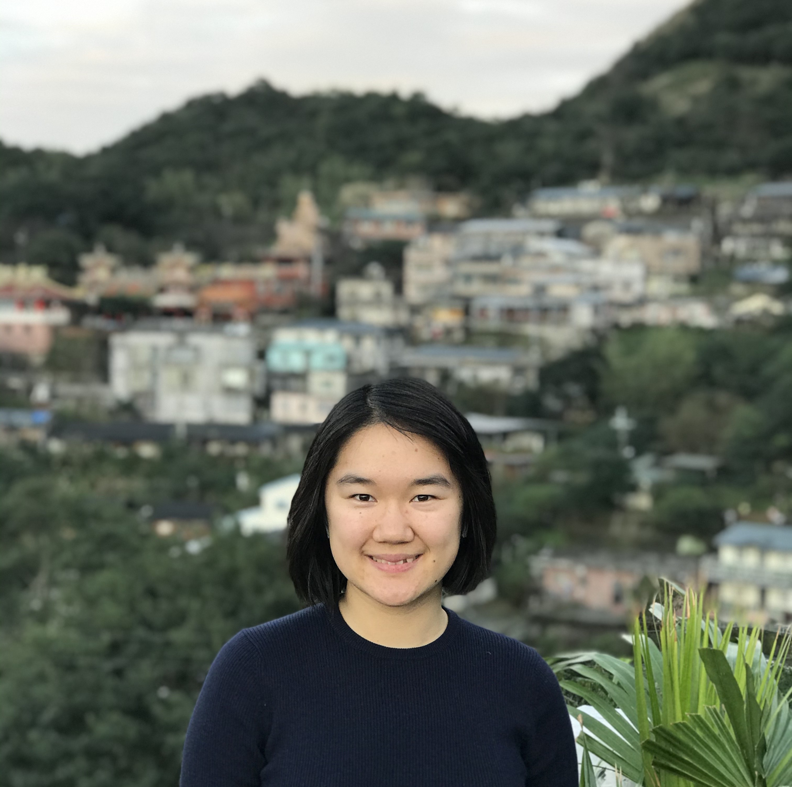

a little about me
Hi I'm Elizabeth! I am a 3rd year Computer Science student at University of Washington Seattle looking for full time
Software Engineer, Product Manager, and Program Manager roles.
My past internship experience have allowed me to be an adaptable team members and proactive problem solver.
My interests in data science/machine learning and computing education have motivated me to become a teaching assistant for
a data programming class involving teaching introduction to Python to college students.
As a proud first generation college student, I plan to make impact in the intersection of technology and data
in order to craft inclusive products for people with situational disabilities. I have given a tech talk and spoke
as a panelist for young women in STEM and I hope to bring my dynamic skillset and growth mindset to future technical challenges.